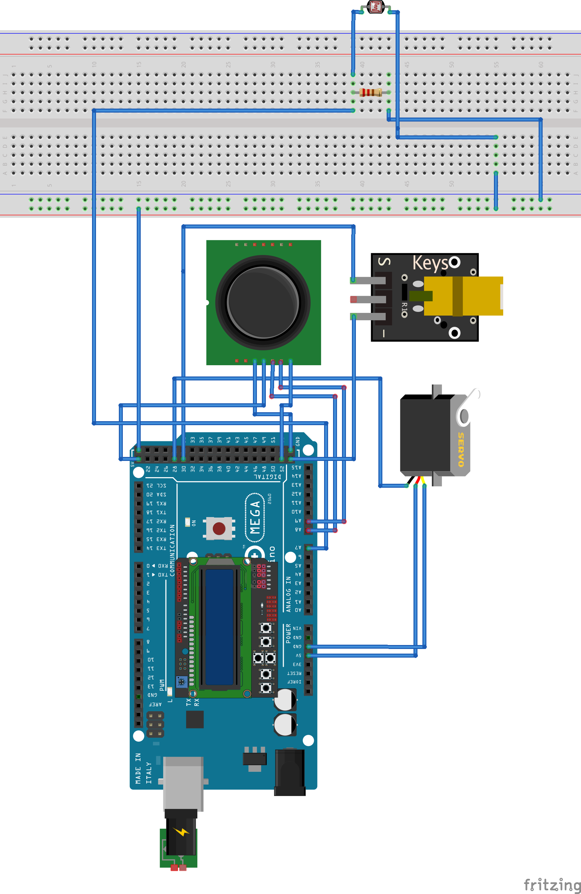

Project 1
Introduction
The goal of project 1 is to become familiar with embedded systems programming techniques, the required hardware, and software/hardware interfacing issues. Project 1 is divided into two phases. Phase 1 consists of connecting all the necessary sensors and actuators into a single station. Phase 2 consists of separatings the single station into a base and a remote station. The two stations communicate through bluetooth radio.
Hardware
There are 7 different hardware components used in project 1.
Arduino Mega 2560
The Arduino Mega 2560 is based on Atmel AVR ATmega 2560 MCU. The board has:
- 54 digital input/output pins
- 4 UARTs
- 16 analog inputs
- 1 USB connection
- 1 power jack
- 1 reset button

KY-008 Laser Module
The Keyes laser fires a small but intense beam. It has 3 pins: GND, +5V, and a middle pin which is not connected.

DFROBOT LCD Keypad Shield
The LCD keypad shield is designed for Arduino boards and consists of 5 keys. The display has 2 rows and 16 columns.

Servo Motor
The servo motor will control the position of the laser and is controlled through a joystick.
Joystick
The joystick contains 5 pins: GND, +5V, VRx, VRy, and SW. The VRx pin is used to read the x value, the VRy pin to read the y value, and the SW pin for the push button on the joystick.

Bluetooth HC-06
The bluetooth hardware can be configured to function as a master or a slave, the name and the PIN can also be changed.

Lightsensor
When the lightsensor is exposed to light, the resistance goes down. Connecting the lightsensor requires using a pull-down resistor.

Phase 1
All of the hardware components (except bluetooth) are connected to a single Arduino Mega 2560. The figure below shows the connected components.
Three functions run in a loop about every 100 milliseconds (10 Hz): movementTask, laserTask, and lightSensorTask. The movement task reads the x value (0-1023) from the joystick pin and maps it to a value between 800 and 2200 microseconds and writes it to the servo. The servo's movement is controller by writing a microsecond value between 500 and 2500, where 1500 is the middle. The method also keeps track of the previous 2 previous values written to the servo and computes the new value to be written to the servo by weighting the newest value at 60%, the last used value at 30%, and the last value at 10%. This helps reduce noise and provide a smoother motion from the servo.
The laser task performs a digital read from the SW pin on the joystick (denoted by joyZ) and if the push-button on the joystick is pressed, turns on the laser by writing a value of HIGH to the pin.
The light sensor task performs an analog read (A/D conversion) on the pin connected to the photo cell. The value is small when there is little light hitting the photocell. We determined through trial and error that a reading greater than 350 meant the photocell was exposed to excess light, and thus concluded anything higher meant a laser was being fired. One end of the photocell is connected to power, and the other to a 10K pull-down resistor and ground. The point between the pull-down resistor and the photocell is connected to an analog input on the Arduino Mega 2560. This is illustrated by the figure below:

The LCD displays the current position of the servo, whether the laser is on or off, and whether the light sensor is being shot or not. Each of the three functions is responsible for updating the display, but later this functionality will be moved out into its own task. Phase 1 is concluded with a block diagram showing all the components connected to the Arduino Mega 2560 station.
Phase 2
In Phase 2, the existing system components of Phase 1 were split between two Arduino ATMega2560 boards. The goal was to have one board function as the "base" station, and the other as the "remote" station (which would eventually be connected to a Roomba and function as our "laser tank"). Both systems were also required to operate using a time-triggered scheduler (TTA) so that CPU utilization could be minimized. Using a USB logic-analyzer, the expected timing requirements of all I/O devices were tested and optimized.
Apart from the split into two boards, several changes were made to the system in Phase 2. Three additional light sensors were wired in parallel with the single sensor from Phase 1 - this was done to increase the accuracy of the "Red Solo Cup" target (seen in Phase 1 photo). Because an additional Arduino ATMega2560 board was introduced, Bluetooth adapters were wired to the RX1 and TX1 pins on each board so that the two boards could communicate wirelessly over a bi-directional serial connection. Two new Bluetooth tasks (Receive and Send) were created on each station for this purpose. The bluetooth configuration procedure can be found here. The block diagram configuration of the entire system in Phase 2 is as follows:
Time Triggered Architecture
A time-triggered architecture (TTA) was also incorporated for phase 2. The library that was used can be found here. This architecture allowed "tasks" to be created and periodically scheduled on both stations. The methods written in Phase 1 were split between the two stations and periodically scheduled as tasks using the TTA. Additionally, the new Bluetooth tasks were scheduled on each stations. To store control information sent from both stations, a fixed-sized queue was instantiated for each I/O device. When the "Bluetooth Receive" function runs on either station, the control information that is received is stored in the dedicated queue for the device it was intended for. The data is used (and removed from the queue) when the respective device task runs on its periodic schedule. Each queue was implemented as a circular array with a length of 10, which drops new data entries when it is full (although this has never been observed to be the case).
Base Station
The base station has five tasks that use the TTA library to run on a fixed schedule. They are:
- laserTask - Scheduled every 100ms, with an 25ms offset
DESCRIPTION
- bluetoothReceive - Scheduled every 150ms, with an 0ms offset
DESCRIPTION
- lightSensorTask - Scheduled every 100ms, with an 20ms offset
DESCRIPTION
- screenTask - Scheduled every 150ms, with an 50ms offset
DESCRIPTION
- movementTask - Scheduled every 200ms, with an 15ms offset
DESCRIPTION
Remote Station
The remote station has four tasks that use the TTA library to run on a fixed schedule. They are:
- laserTask - Scheduled every 100ms, with an 20ms offset
If there is data available in the laser data queue, this task simply dequeues the data and uses the value obtained to control the status of the laser (0 for on, 1 for off).
- servoTask - Scheduled every 25ms, with an 0ms offset
Since it was imagined that the servo motor would eventually control a sort of "laser turret" on top of the Roomba Tank, it was decided that controls sent to the servo motor must give precise and consistent control to the operator. To meet this requirement, control-data for the servo is sent as a degree between 5 and 175, and on each call to the servoTask by the TTA, the servo motor increments or decrements it's position towards that "goal". The decision to control the servo motor using this type of relative positioning means that the sampling frequency of the servoTask is relatively higher than the other tasks, although it provides for very exact movement.
- bluetoothReceive - Scheduled every 50ms, with an 5ms offset
This function checks the Bluetooth serial connection for incoming information. If there is something available, it reads the first byte to determine what kind of control data has been sent, and places it in the appropriate I/O device queue.
- bluetoothSend - Scheduled every 100ms, with an 35ms offset
The base station must receive information confirming what actions have been taken on the remote station, so that it can display it on an LCD. This function compiles the current state of the laser (0 or 1) and the servo (5-175) into a packet, and prints it with a header byte to the Bluetooth serial UART pin.
Packets were designed to send state information for each of the I/O devices. The first byte of each packet determines what I/O device is being sent control information (ie: 0 for LASER, 1 for SERVO, 2 for SCREEN). If the device being controlled is the servo motor, an additional byte is sent that tells the remote station how many subsequent digits of data to read. Finally, the control data is sent. For the laser, this is a single binary value (representing on or off); for the servo, it is a set of digits that when combined, are equal to a degree signal between 5 and 175 to control the servo motor. The Bluetooth Receive function that was created reads in these packets and stores them in a fixed-length queue. Each I/O task then dequeues data from the queue and uses it to control each respective device.
Logic-Analyzer
The USB logic-analyzer ensured timing requirements were met. Initially on the base station, the screenTask was taking a long enough time that it delayed the laserTask. This is seen in the figure below between 0.7 and 0.8s. The channels correspond to:
- Channel 0: laserTask
- Channel 1: bluetoothReceive
- Channel 2: lightSensorTask
- Channel 3: screenTask
- Channel 5: movementTask
- Channel 7: CPU idle time
After adjusting the offsets and timing so that no conflicts occured and everything remained responsive, we came up with the times stated in the above TTA section and the following logic-analyzer outputs for the base and remote station respectivly:
CPU Utilization
The following table shows data taken from the logic-analyzer about each task and the computed CPU utilization of each task. For the base station:
| laserTask | Period = 0.100217s | Width = 0.133833ms | Frequency = 9.967Hz | CPU util = 0.13339% |
| bluetoothReceive | Period = 0.1502475s | Width = 76.08333us | Frequency = 6.6557Hz | CPU util = 0.05064% |
| lightSensorTask | Period = 0.1005703s | Width = 0.1180833ms | Frequency = 9.943298Hz | CPU util = 0.11741% |
| screenTask | Period = 0.14925283s | Width = 4.23963333ms | Frequency = 6.70004Hz | CPU util = 2.84067% |
| movementTask | Period = 0.2003315s | Width = 0.2910833ms | Frequency = 4.991726Hz | CPU util = 0.14530% |
| Total CPU util = 3.28721% | Total CPU idle = 96.7128% |
And the remote station:
| laserTask | Period = 99.95083ms | Width = 5.833333us | Frequency = 10.004919Hz | CPU util = 0.000006% |
| servoTask | Period = 24.38783ms | Width = 70.75us | Frequency = 41.004053Hz | CPU util = 0.29010% |
| bluetoothReceive | Period = 50.50625ms | Width = 8.3333us | Frequency = 19.7995Hz | CPU util = 0.01649% |
| bluetoothSend | Period = 0.1005094s | Width = 0.34333ms | Frequency = 9.949316Hz | CPU util = 0.34159% |
| Total CPU util = 0.64819% | Total CPU idle = 99.3318% |
Sampling Frequencies
As can be seen in the below tables, we estimated the lowest sampling frequency for each I/O device in order for the system to still run smoothly. The base station's frequencies are as follows:
| laserTask | Lowest sampling frequency = 10Hz |
| bluetoothReceive | Lowest sampling frequency = 6.66Hz |
| lightSensorTask | Lowest sampling frequency = 10Hz |
| screenTask | Lowest sampling frequency = 6.66 Hz |
| movementTask | Lowest sampling frequency = 5Hz |
The remote station's frequencies are as follows:
| laserTask | Lowest sampling frequency = 10Hz |
| servoTask | Lowest sampling frequency = 40Hz |
| bluetoothReceive | Lowest sampling frequency = 20Hz |
| bluetoothSend | Lowest sampling frequency = 10Hz |
Conclusion
The main goal of project 1 is to work towards eventually mounting the remote-station on top of a Roomba. The base-station will then be able to control the movement of the Roomba as well as the position of the laser. Using the TTA has ensured that the embedded system is meeting all timing requirements. This was verified using a logic analyzer. The total CPU utilization was calculated to be _, which provides confidence going into project 2.
Appendix
Download the phase 1 source code here.
Download the phase 2 source code here.